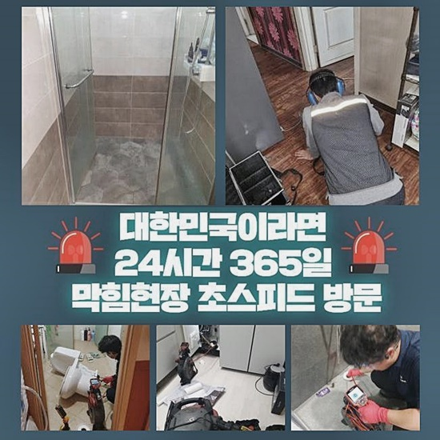
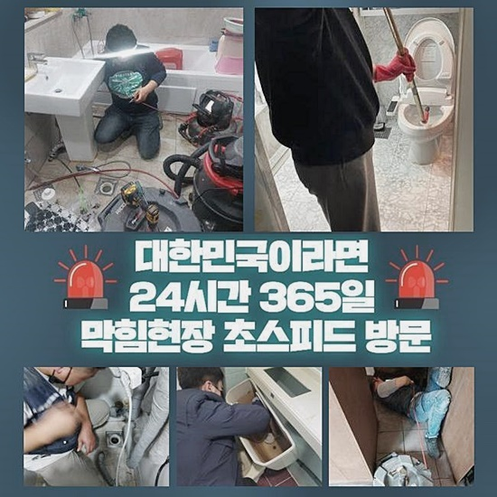
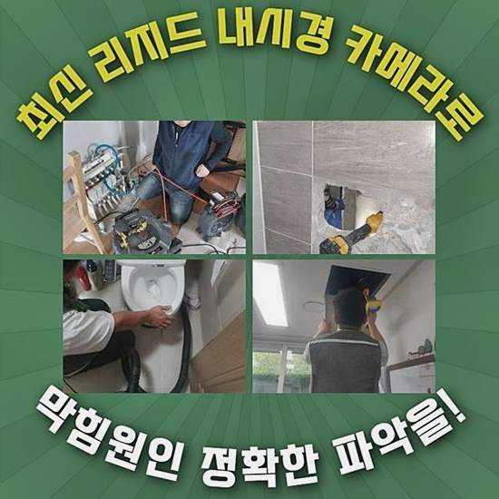
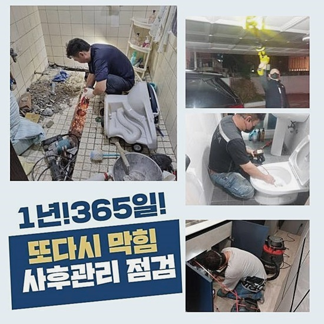
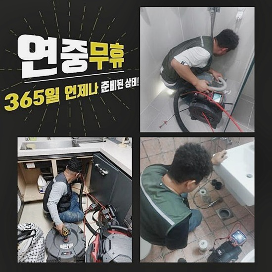
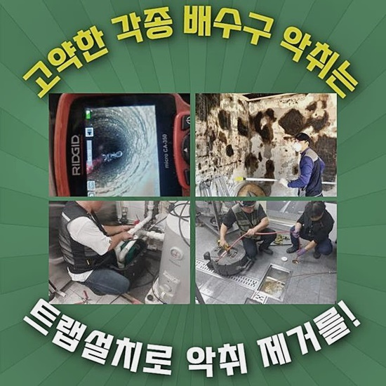
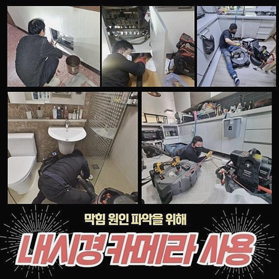

🏠 장호원 하수구역류 싱크대막힘 수리 출장업체
용인 싱크대막힘 전문 시공 후기

📋 작업 개요
- 위치: 용인
- 서비스 유형: 싱크대막힘, 하수구막힘, 배관막힘, 역류해결, 뚫는업체, 배관청소, 고압세척, 설비공사, 악취차단
- 작업 일시: 2024. 6. 4. 10:37
- 업체명: 하수구수사대 (010-5615-2118)
🔍 문제 상황
장호원 하수구역류 싱크대막힘 수리 출장업체
배관에 문제가 생기면 고객님들은 어떻게 사태를 타개하려 하나요?
일반적으로는 자체적인 기술을 토대로 해결해보고자 시도를 실행하곤 하죠
집 안에 있는 다양한 세척용품을 써보시거나 압축기기를 넣어보기도 하죠
해당되는 방책들이 무조건 안 좋다고 간주할 수는 없겠으나 오히려 말썽을 안좋게 만들수 있어서 무모한 감행은 자제하시는 게 바른 결단이예요
엄중한 사태땐 제반시설까지 바꿔야 하는 사태에 치달을 수도 있어요
금일엔 실제현장을 기초로 하여 배관고장에 관하여 소개드리려고 하오니 약간의 시간만 할당해 주신다면 보탬이 되어드릴 수 있다고 생각합니다
집안의 배관엔 액체 성분이 진입하며 잔재들이 쉬이 누적될 수 있답니다
관 안에 이물누적이 계속되면 관 정체에서 끝나는 것이 아니라 실체적인 기능성도 심히 변화할 수 있어서 주의가 요망돼요
배관막힘으로 자주 만날 수 있는 손실론 배관물의 역행이나 악취 등을 들 수 있습니다
문제가 발발하기 이전에 정기적으로 진단하고 생활해 나가야 갑작스레 사용하지 못하는 말썽을 차단할 수 있죠
다소 안일한 생각으로 관리한 탓에 위태로운 상태에서 우리팀을 검색하시는 고객님들이 매우 많다고 볼 수 있죠

🔎 원인 분석
💡 전문가 진단: 정밀 진단 장비를 사용하여 슬러지의 고착 여부를 판명하고 타격/세척 작업을 실시했습니다.
금번에 제시할 곳 또한 배수관에서 일어난 트러블로 조속한 방문을 요청하셨는데요
가정 내의 화장실 배관이 정체가 되었고 다른 배관쪽에서는 물이 넘치는 상황이 일어나는 상황이라 조속히 요청한 곳에 나가보았답니다
도착한 장소는 주상복합이었고 1층에는 상가가 있었답니다
상가 천장면을 보았더니 바로 윗집 배수관이 노출형태로 세팅되어 있는 모양새였죠
지금 배관막힘이 다방면으로 발생하고 있는 사실들을 파악 후 바깥의 배관부터 처리하기로 결단을 내렸어요
겉부분부터 집안 안쪽 배수구방향으로 배수관 세정작업을 실행했죠
그렇게 한 까닭은 배수파이프는 가정 내에서 발생한 오수가 외부 관에까지 이어진 형태이기에 일부분이라도 흐름성이 약화되면 인접 장소에서 고장이 일어날 수 있기 때문입니다
그렇기에 전반적인 조치가 요청되는 상황이었어요
의뢰자분의 가족들이 화장실 안에서 배수로로 물을 내려보내면 몇 분 지나 주방쪽과 욕실 안의 또다른 배수구에서 물이 토출되는 상황이 직관되어 상당한 고민에 빠져 있어셨는데요
주요 파이프 중에서 어떤 쪽에서 말썽이 생겨서 그것과 관계된 배수파이프에서 동시적으로 정체가 일어난 상황으로 볼 수 있었죠
이렇게 하수도가 급작스레 차단된다면는 단순하게 막혀버린 지점만 뚫어내는 게 아닌 대략적인 배관 클리닝이 불가피합니다
눈에 보이는 지점의 이물들만 소멸시키는 것으로 완료하면 다른 배관쪽에서 지속해서 문제들이 발현되기도 하므로 관 안에 정체된 찌꺼기 전반을 빠짐없이 처리하는 수리가 요망되는 겁니다
관이 노후되거나 이물들로 훼손되면 액체가 지나갈 틈이 비좁아지고 물이 빠져나가는 속력이 느려지게 되어 역류의 상황까지 치달을 수가 있어요

🔧 작업 과정
금번에 조치한 장소는 막힘이 일어난 부위가 외부로 드러난 배관쪽이었답니다
그때문에 상가 천장 부근에서부터 뚫음을 속행하기로 결행했고 가끔 일어나기도 하는 이물 낙하 등의 상황에 대응하여 보호지로 보양을 진행하였답니다
파이프관 일부에 홀을 내어 내부 세정을 감행해 나가는 것인데요
노출배관에서 매립된 배관쪽으로 뚫음을 감행하고 그 뒤 그 반대방향으로도 세척하기로 결단내렸어요
양방향에서 세척을 하게 되면 말끔하고 효과적인 작업이 이행됩니다
개별적인 상황에 의거해서 공사하는 시도를 여러가지로 생각해 볼 수가 있답니다
전체 배수시스템의 성격을 간파하고 실제 물흐름을 진단한 뒤 조치를 취하는 것이라 신뢰할 수 있게끔 완성도있게 뚫음을 이행할 수 있어요
1층 상부에 있는 관의 일부에 의도적으로 뚫은 자리를 기준으로 내부에선 플렉스샤프트라는 기기를 가동하여 업무를 진행하였답니다
플렉스샤프트는 배수관 소제에 필수적인 것으로 사슬의 형태로 제조된 상단 부분이 배수관 내부를 전반적으로 훑으면서 잔재들을 사라지게 만들죠
막혀버린 지점을 해결하고 세부적인 청소를 실행하기 위해서 내시경기기를 넣어 내부 문제를 탐색하면서 샤프트기기를 가동시켰어요
오로지 뚫음에만 신경쓰는 것이 아니고 바깥의 오수탱크로 이어지는 파이프가 깔끔해지는 걸 대상으로 정하고 각 자리에서 클리닝 작업을 지속적으로 진행하여야 했답니다
전체적인 배수관 크기가 상당하였기에 한쪽 방면에서만 세척하는 것과 차이나게 여러 곳에서 트라이해보는 것이 더더욱 효율적이라고 볼 수 있답니다
이렇게 작업을 이행했더니 금새 깔끔해진 배수구 안을 관찰할 수 있었어요
고객님의 처소로 이동해서 수돗물을 가득 부어보았어요
관의 이물이 없어지고 미세한 찌꺼기들도 청소되었다면 이전과 같이 주방배관쪽으로 역류가 일어나지 않고 물이 외부쪽으로 온전히 배출되는 것입니다
주방공간을 포함하여 문제가 생겼던 배수구쪽에서 증세여부를 판단하였는데 과거와 같은 막힘이나 역류가 없었으며 시원하게 물이 사라졌기 때문에 배관막힘 수선을 흡족하게 마무리지을 수 있었습니다
역류 및 배관막힘 시공을 제대로 하려면 구조적인 문제점을 파악한 후에 시행하는 게 중요합니다
가끔 성한 자리까지 망가트리는 경우도 있어서 능숙한 실력을 바탕으로 한 기술자가 필요한 것입니다
하수관쪽에서 파손 등이 생기면 여러 지출 항목이 발생될 수 있으므로 큰 상황으로 번지기 전에 주기적으로 돌보아서 배수관을 오랜 기간에 걸쳐 유지하실 것을 권장합니다
관벽에 이물이 누적되지 않게만 관리가 실행된다면 역류증세나 불쾌한 환경조성을 피하면서 깔끔한 상태로 생활하실 수 있어요


✅ 작업 완료
배관내시경을 이용한 관측에서부터 뚫음을 진행하는 시공까지 연계된 사안에 대해선 언제나 우리들이 조력하도록 할게요
믿을 수 있는 곳을 물색중이시라면 언제든지 출동할 수 있는 저희에게 의뢰해 주시길 바랍니다
전 지역을 총괄하여 방문을 하고 있으며 내방과 관련한 비용은 없기 때문에 고민없이 진단과 관련한 노무서비스를 만끽하실 수가 있습니다
거기에 더해 시공과 관련한 내역을 세세히 알려드려서 의뢰인분의 염려를 우선적으로 사라지게 만들고 있으니 더더욱 신용을 더해드릴 수가 있는 것이죠
본 글에서 설명해 드렸던 사안에 해당하지 않지만 의문나는 건이 있으면 편안한 마음으로 연락 부탁드려요




⚠️ 주방 싱크대 배관 막힘 예방 수칙
- ✅ 기름기가 묻은 식기나 프라이팬은 설거지 전 키친타올로 반드시 기름때를 닦아내세요.
- ✅ 주기적으로 싱크대 개수대에 뜨거운 물을 가득 받아 한 번에 내려 배관 내부 기름을 씻어내세요.
- ✅ 배수구 거름망을 미세한 필터로 사용하시고 음식물 찌꺼기가 틈으로 새어 들지 않게 관리하세요.
- ✅ 베이킹소다와 식초를 뜨거운 물과 함께 일주일에 한 번씩 부어주면 배관 살균과 막힘 예방에 좋습니다.
💡 핵심 정리
- 확실한 장비 작업(내시경 점검 및 샤프트 스케일링)으로 원인을 뿌리 뽑습니다.
- 작업 후 1년 이내에 동일한 부위 재발 시 100% 무상 A/S 서비스를 보장합니다.
- 서울 · 경기 · 인천 전 지역에 24시간 언제든 긴급 출동할 수 있도록 항시 대기 중입니다.
❓ 자주 묻는 질문 (FAQ)
🚨 용인 싱크대막힘 문제로 고민이신가요?
정확한 원인 진단과 확실한 시공으로 재발 없는 해결을 약속드립니다.
24시간 긴급 출동 | 서울 · 경기 · 인천 전지역 | 1년 내 재발 시 무상 A/S